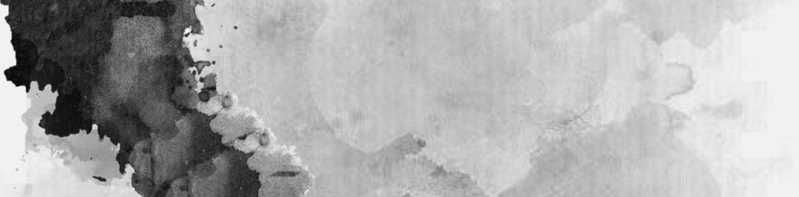
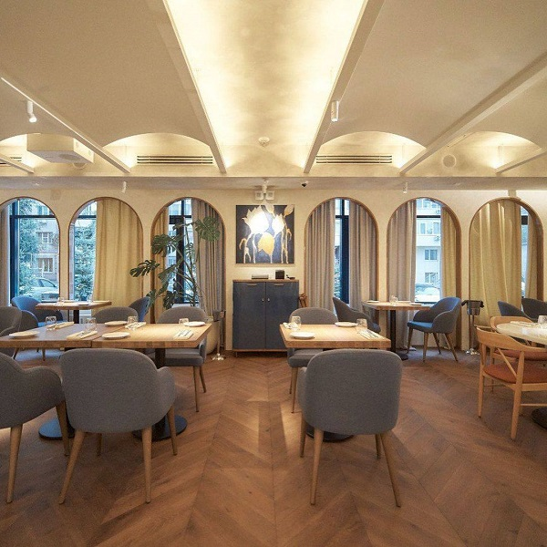
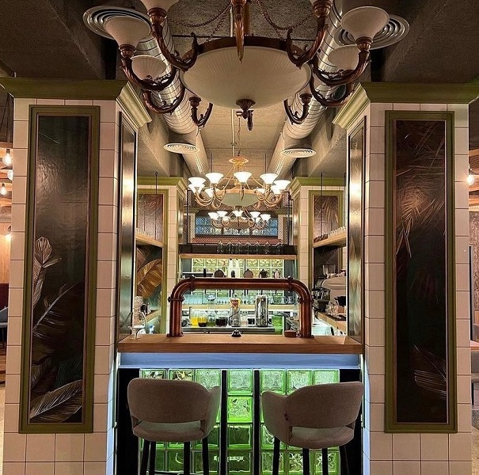
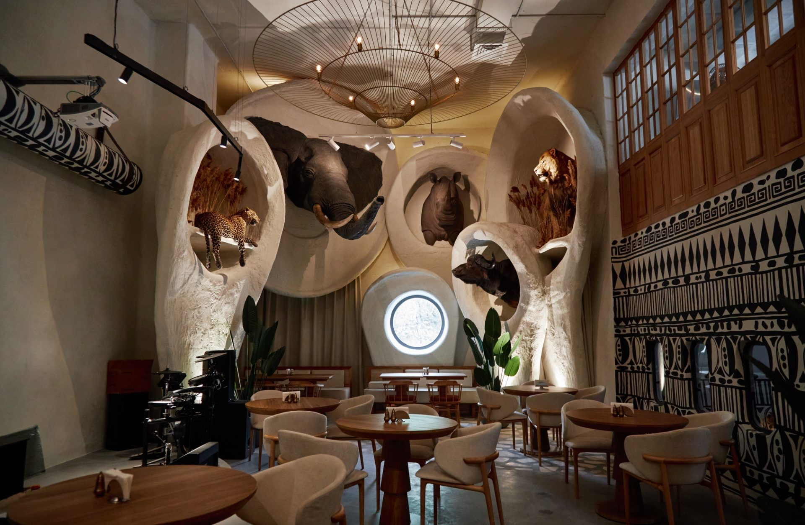
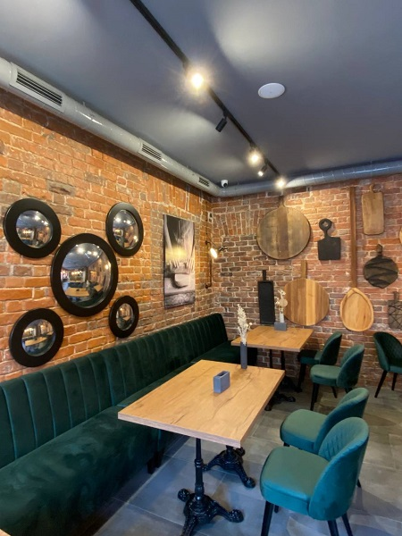
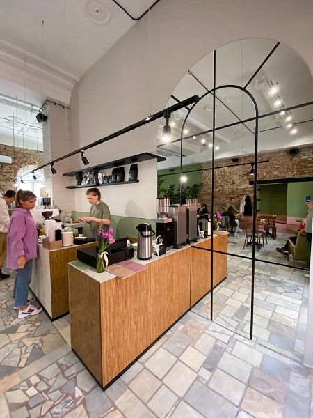
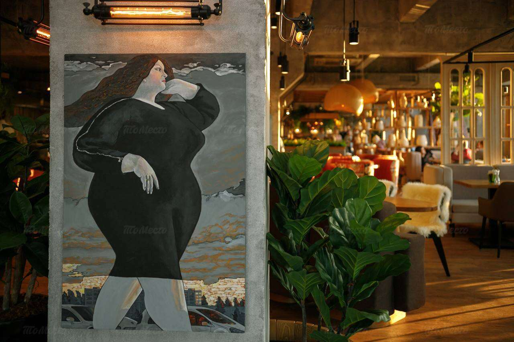
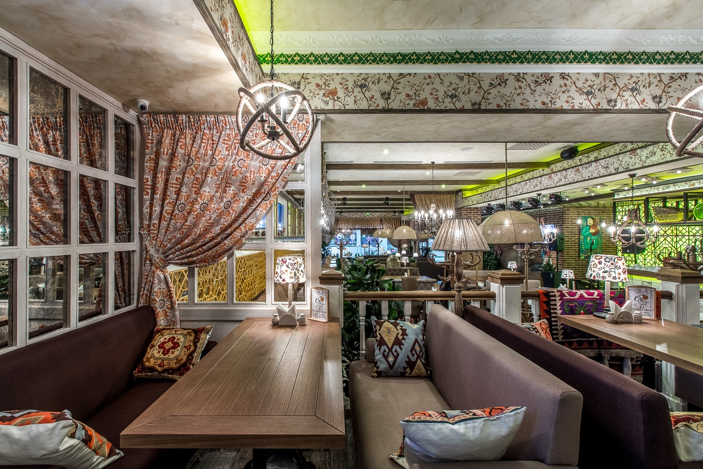
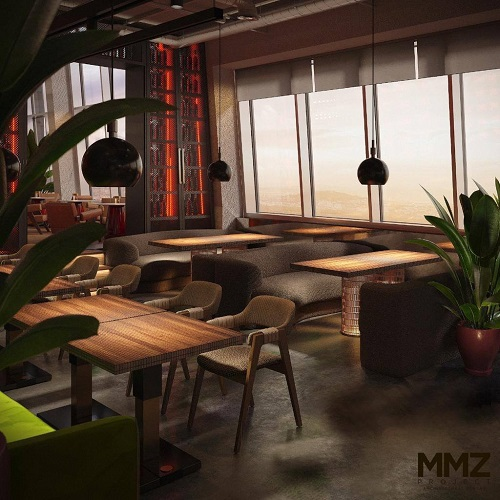

Акции и скидки
Подарочные рубли от Ma Cherie
Кондитерская Ma Cherie решила сделать подарок всем своим гостям — 300 рублей на любимый кофе, хрустящие круассаны, муссовые десерты или сытные основные блюда.
- ул.Молодогвардейская, 209
Ulandy cafe дарит подарки
Самое зелёное кафе Самары приглашает всех приехать в гости, оставить отзыв и получить за это в подарок маленький капучино или американо!
Беспроигрышная лотерея в «Бруни»
Семейный ресторан «Бруни» вместе с партнерами вновь раздает подарки, потому что «чудес должно быть еще больше»!
- Среди призов лотереи:
- Подарочные сертификаты от агентства необычных экскурсий
- Билеты в «Мягкий кинотеатр»
- Сертификаты на 30 минут наслаждения и релакса в «Массажмании»
- Подарочные сертификаты к самарскому фотографу Снежане Фадеевой
- Сертификаты от магазина украшений Vavil store
- Сертификаты в детский сухой бассейн Chill
- ул.Ленинградская, 1
Новый формат в ресторане W
LADIES NIGHTS — специальные мероприятия для девушек в W cocktails&food. Каждую среду с 19:00 до 21:00 при фиксированной оплате 1800₽ с гостьи девушки получают сет закусок и безлимит на коктейли!
- ул.Некрасовская, 94
В ресторане «Мясо» стейки по себестоимости
- Рибай - 450₽ за 100гр.
- Стриплойн - 400₽ за 100гр.
- ул. Садовая, 176
Скидка для пенсионеров в «Русико»
В русско-грузинском ресторане «Русико» пенсионеры теперь могут выгодно заказывать блюда и наслаждаться уютной атмосферой: каждый понедельник весь день для пенсионеров действует скидка 20%!
- ул.Дачная, 2к1
Новые заведения
Vivi
Одесский переулок, 20

Ресторан-пиццерия с 20-метровой открытой кухней, винной комнатой с бутылками со всего света и профессиональным сомелье. Большинство блюд повара Vivi готовят при гостях: например, знаменитую неаполитанскую пиццу в итальянской дровяной печи из вулканического камня DE VICINO.
Своя среда
9-я просека, 2-я линия

Помещение ресторана просторное и светлое, с панорамными окнами, из которых открывается вид на закрытую заснеженную территорию комплекса. Место тихое и уединенное, вдали от городской суеты.Зал ресторана вмещает не более 80 посадочных мест, подойдет для большого банкета, так и для частной вечеринки. Также тут есть уютная зона с камином на дровах, где можно уединиться для приватной встречи
Проспект
Волжский проспект, 29

Гастробар на первом этаже гостиницы «Волга». Заведение ориентировано на пиво премиум-класса, в частности LOBKOWICZ и Velvet, вино, морепродукты и стейки.
W Cocktails&Food
ул.Некрасовская, 94

Ресторан с изысканными коктейлями и меню, в котором акцент сделан на морепродукты и мясо. Здесь не боятся необычных сочетаний: подают тирамису из авокадо и салат с крабом и белыми грибами
Ливингстон
ул.Ново-Садовая, 106Гк1

Ресторан-путешествие от Milimon Family. Внутри заведения — настоящие чучела африканских животных, барельефы и рисунки на стенах, много украшений. В меню блюда разных африканских и восточных стран от Туниса, Эфиопии и Индии до Израиля, Кении и Танзании
Meat Happens
ул.Молодогвардейская, 98

BBQ-ресторан от команды Ulandy Family. Мясо в самых разных вариациях, в том числе из смокера, большая барная карта и широкий выбор пива — как российского, так и зарубежного
ПельMan
ул.Фрунзе, 103

Пельменная, в меню которой соединили любимую классику с авангардными решениями шеф-повара. Кроме фарша есть и нетривиальные начинки: пикантный лосось, нежный сливочный сыр, комбо из сыра сулугуни, пармезан, дор блю и гауда и другие
ЗоЗо
ул.Куйбышева, 128/1

Бистро от создателей «То самое тесто» с тремя залами, открытой кухней и ретро-мебелью. В меню главенствует римская пицца, также есть много видов завтраков, десерты и вино
Русико
ул.Дачная, 2к1

Новый проект «Поляны» вместо ресторана «Чучвара». Русско-грузинская кухня, где хачапури соседствуют с ухой, самоварные чаепития и музыкальные вечера в гостеприимной атмосфере
Samara Gastro
ул.Лесная, 23к2

Первый в самаре фудмолл с множеством ресторанных концепций — от баров до паназиатской кухни и здорового питания. Каждые выходные здесь проходят концерты и развлекательная программа, а также мастер-классы для взрослых и детей
Белая черешня
ул.Куйбышева, 111

Второе заведение сети на одной из центральных улиц города. Просторный зал и большая витрина с десертами, в меню завтраки, холодные и горячие блюда из рыбы и мяса, а также сытные сет-наборы с вафлями
Мушмула
ул.22 Партсъезда, 46

Еще одно фирменное заведение сети с уютным и аутентичным дизайном. В меню — классика Грузии: хачапури, хинкали, традиционные супы, салаты и закуски. Каждый вечер в «Мушмуле» играет живая музыка.
Где нас нет
ул.Коммунистическая, 90

Ресторан на месте бывшего People’s тоже работает круглосуточно семь дней в неделю. Интерьер остался практически неизменным, а в меню акцент по-прежнему сделан на мясо и стейки
NEBO
ул.Самарская, 110

Антуражный интерьер в стилистике модных районов Токио, панорамный вид на Самару, баланс между европейской и азиатской кухнями. В меню — морепродукты, роллы, вок, паназиатские супы и основные блюда
Мастер-классы
Студия Аквариум
Ближайшие мастер-классы:
| Дата/время проведения | Мероприятие |
|---|---|
| 11/04/2023 19:00 | морской ужин |
| 13/04/2023 19:00 | паназиатская кухня |
| 18/04/2023 19:00 | парный вторник |
| 25/04/2023 19:00 | мясной клуб |
| 26/04/2023 19:00 | грузинская кухня от PURI |
| 30/04/2023 11:30 | воскресный бранч |
*Подробную информацию смотрите на официальном сайте
ArtPiknik event-агенство и PICNIC catering
Выездные мастер-классы в формате на ваш выбор
- Гастрономический вечер от шефа
- Кулинарный баттл
- Мастер-класс по приготовлению роллов
- Мастер-класс по приготовлению стейков
- Кулинарный мастер-класс по венским вафлям
- Кулинарный мастер-класс по десертам
Увлекательный рассказ о блюдах,которые будут готовится в вашем присутствии: о рецептах и традициях,секретах приготовления и подачи,а ещё какие напитки подойдут лучшим образом.
Шеф-повар будет беспристрастно следить за ходом соревнования,но при этом к нему всегда можно обратиться за помощью—ведь в конце баттла всех ждет дегустация.
Японские роллы—сочетание вкуса,пользы и эстетики,и если научиться готовить их правильно, можно здорово разнообразить свой рацион. Или просто получить удовольствие от новых знаний и умений.
В программе—увлекательные факты про мясо: как выбрать и не прогадать,как разделывать и какие части идут на стейки.
Шеф-повар подробно рассказывает и про тесто,и про время приготовления,и про то,какие сочетания начинок самые вкусные.
Вы сможете познакомиться с различными десертами: европейскими, экзотическими и даже диетическими,с классической подачей и в порционных стаканчиках.
*Подробную информацию смотрите на официальном сайте
Студия FARTOOK
Ближайшие мастер-классы:
| Дата/время проведения | Мероприятие |
|---|---|
| 08/07/2023 18:30 | готовим мясо с Лешей Семеновым |
| 10/07/2023 12:00 | субботний обед с Лешей Семеновым |
| 17/07/2023 11:00 | сытный завтрак с Костей Маковецким |
| 20/07/2023 18:30 | с Костей Маковецким-учимся ловить и подбрасывать тесто для пиццы |
| 21/07/2023 18:00 | школа юных поварят |
| 27/07/2023 18:30 | роллы с Лешей Семеновым |
*Подробную информацию смотрите на официальном сайте
Шоколадная мастерская «Екатерина»
Мастер-классы:
- Магия шоколада
- Клубника в шоколаде
- «Шоколадное путешествие»
- Профессиональный
- Индивидуальные МК
Почувствуете себя настоящим шоколатье.Вы сварите шоколад или какао по уникальному рецепту и насладитесь его вкусом.
Научитесь создавать тонкую хрустящую шоколадную оболочку на сочной ягоде
На мероприятии маленьких путешественников встречает сказочный эльфи отводит к Королеве шоколада. Она угостит каждого гостя волшебным розовым какао и научит тайнам приготовления любимого угощения.
Шоколатье поделится своими секретами создания шоколадных коллекций, методикой введения пряностей и аромамасел, изобретения вкусовых сочетаний,к которым хочется возвращаться.
| Виды: | Выездные и в мастерской: |
|---|---|
| Корпоративы | Выездные от 10 человек |
| Девичники | В мастерской до 10 человек |
| Дни рождения | |
| Сладкая зона на юбилеи, свадьбы |
*Подробную информацию смотрите на официальном сайте